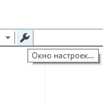

В данной статье мы научимся поддерживать порядок в коллекции аудиозаписей нашего радио и так добавлять треки, чтобы не нарушить хрупкую стабильность.
Большинство аудиоформатов умеют хранить не только саму дорожку, но и теги: испольнитель, альбом и его обложка, слова песни, жанр и даже настроение. Это довольно драгоценная информация, ведь по ней можно опознать трек, поэтому к ней нужно относиться соответствующе.
Редактировать теги мы будет программой Mp3tag. Не будем разбирать её скачивание и установку, а вот разобрать настройку необходимых колонок и использование тегов ID3v2 в кодировке UTF-8 всё же стоит.

Открываем настройки